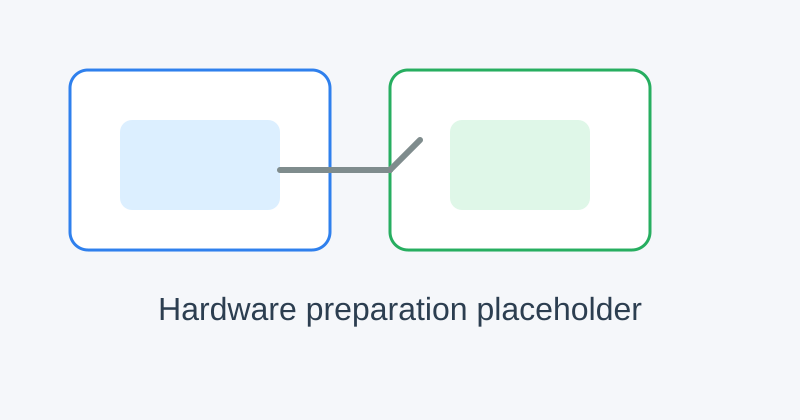
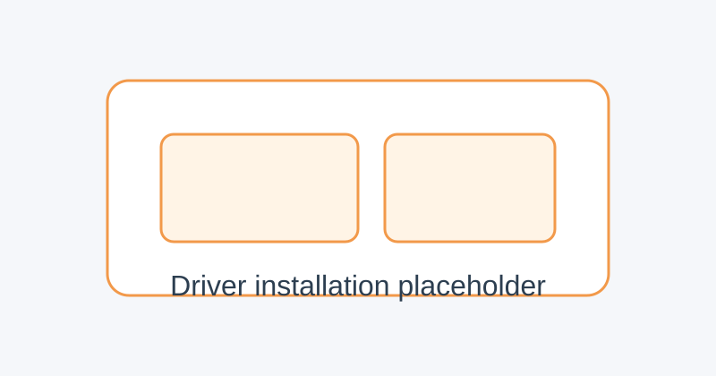
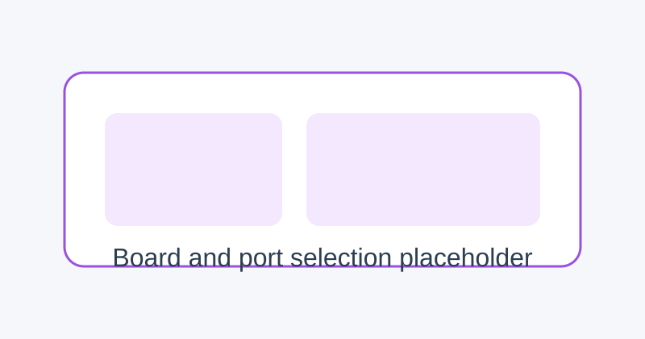
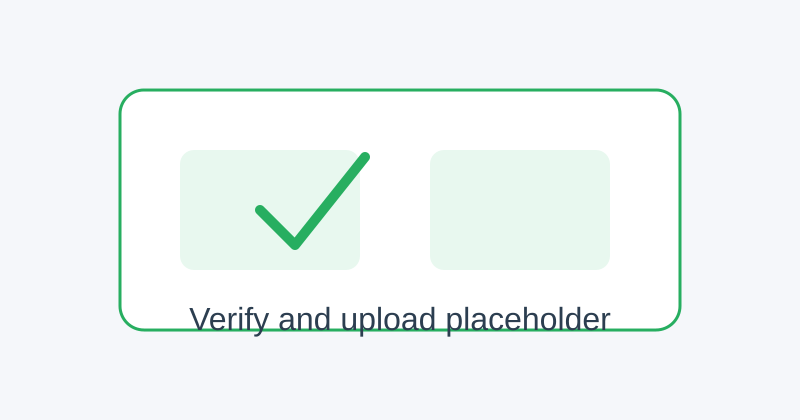
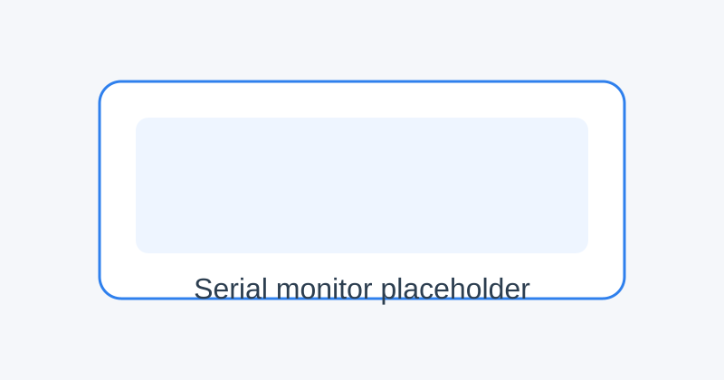

How To Upload Code To ESP32
This guide explains how to upload a program to the ESP32 development board using the Arduino IDE. The steps below cover hardware connection, driver installation, board configuration, uploading firmware, and serial monitoring.
1. Prepare the Hardware
Before uploading code, connect the ESP32 board to your computer using a USB cable.
Connect the ESP32 board to the PC with a USB cable.
Make sure the board is powered on and the USB cable is not loose.
If the board is not detected, check the USB cable and the driver installation.
{kind=link}

Note
Some ESP32 boards have a BOOT or EN button. If the board is not responding, press and hold BOOT while clicking Upload, then release it when the upload begins.
2. Install the Serial Driver
This kit uses a USB-to-UART bridge chip. If the driver is missing, the board may not appear in the port list.
Open Device Manager and check whether the CP2102 or a similar USB serial device is installed.
If it is not installed, download the driver from the official Silicon Labs website.
After installation, reconnect the board and verify that a serial port appears.
{kind=link}

Note
On Windows, a new COM port usually appears after the driver is installed successfully.
3. Open Arduino IDE and Select the Board
Launch the Arduino IDE.
Open the example sketch or your own program.
In the menu bar, click Tools → Board and select the correct ESP32 board model.
In Tools → Port, choose the COM port that belongs to your ESP32 board.
{kind=link}

Note
If multiple COM ports appear, unplug and reconnect the board to identify the correct one.
4. Verify the Program
Before uploading, you should verify that the sketch compiles.
Click Verify in the Arduino IDE.
If there are no errors, the compilation will finish successfully.
If errors appear, check the code, library version, and board selection.
{kind=link}

5. Upload the Program
After the sketch compiles successfully, upload it to the ESP32.
Click Upload in the Arduino IDE.
Wait until the progress bar reaches the end.
If upload fails, hold BOOT while clicking Upload, then release it when the upload starts.
Note
The upload process may take 10 to 30 seconds depending on the size of the sketch and the board model.
6. Open the Serial Monitor
After the upload finishes, you can view the program output through the serial monitor.
Click Tools → Serial Monitor.
Set the baud rate to match the program, commonly 115200 or 9600.
Observe the debug output and sensor data printed by the board.
{kind=link}

7. Common Troubleshooting
If the board is not detected, check the USB cable, driver, and port selection.
If the upload fails, try a different USB cable or press and hold BOOT during upload.
If the program runs incorrectly, verify the correct board type and baud rate.
If the serial monitor is empty, make sure the baud rate matches the sketch.
Summary
With the steps above, you can successfully upload programs to the ESP32 using the Arduino IDE. After the upload is complete, you can test your project, debug its behavior, and further expand its functions.